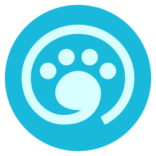

f3liz.casa · making

noraneko
のらねこ。Firefox の上に、すこしの TypeScript。
A Firefox-based browser built in artifact mode: Mozilla ships the engine, noraneko writes the front in TypeScript. Floorp 12 runs on it today.
shipping inside Floorp 12, as noraneko 0.2.0 · since March 2024 · Deno + Vite + Preact, on Firefox · daily runtime builds for Linux and Windows · MPL-2.0
why it exists
To change how a browser feels without compiling a browser. Firefox has an artifact mode: fetch a finished engine from Mozilla's build servers and build only the front end on top. noraneko takes that seriously. There is no C++ in the tree, the UI is TypeScript bundled by Vite, and a development build with hot reload comes up in minutes rather than hours.
It started as a stray cat, a place to try things that were too rough for a browser people use. Then Floorp 12 was rebuilt on it: Floorp's UI repository is noraneko 0.2.0 with Floorp's features and branding on top, and its runtime is built the same way. So the stray cat is, today, the frame under a browser that people do use. noraneko itself stays the rough copy, where the next thing is tried first.
the name
Noraneko (野良猫) is a stray cat. It belongs to nobody's plan, walks into any yard, and tries the door. The logo, a cat with the wordmark, was drawn by CutterKnife.
what it is made of
┌ browser-features ──────────────────────────────────────────────────┐
│ chrome/ the UI: tab strip, sidebars, panels, in Preact on XUL │
│ modules/ system side: actors, observers, handlers │
│ shared/ code both sides use │
│ skin/ themes: noraneko, lepton, fluerial │
└──────────────────────────────┬───────────────────────────────────────┘
│ event dispatcher
┌ bridge ──────────────────────┴───────────────────────────────────────┐
│ startup/ loader-features/ loader-modules/ │
│ the few files Firefox runs first, which then load everything above │
└──────────────────────────────┬───────────────────────────────────────┘
│
┌ noraneko-runtime ────────────┴───────────────────────────────────────┐
│ Firefox, as Mozilla built it, plus branding and packaging patches │
│ a separate repository; daily builds on GitHub Actions │
└──────────────────────────────────────────────────────────────────────┘Two repositories, on purpose. The UI tree never compiles the engine, and the runtime tree never sees the UI. The runtime's daily job pulls upstream Firefox, applies a short stack of patches, builds with profile-guided optimisation, and publishes an archive that the UI tree's mach unpacks. Development is deno task feles-build dev, and the browser reloads as you save.
builds in minutes
Because the engine arrives finished, a full build of noraneko is the front end only. That is what makes it a testbed: an idea for the tab strip can be tried, seen and thrown away in an afternoon, on a laptop, without a build farm.
a runtime you can rebuild
The runtime repository is the reproducible half. Patches live as files, branding is an asset folder, and the whole pipeline is a workflow anyone can fork and run. A self-hosted builder for Linux and macOS on ARM was brought up in September 2026, so the daily build does not depend on one vendor's runners.
the tab strip is an experiment
The question is whether messy code can be replaced by code you can understand. Firefox's gBrowser is twenty years of tab logic in one object. The tab strip here swaps its methods out one at a time, each as a small module, with the DOM as the single truth and a read-only mirror for the UI. Split view and tab groups sit on it. Whether it holds up is the experiment.
what it is not
- not a browser to live in. It says "Experimental!" at the top of its README and means it. Floorp 12 is the same frame, finished; live there
- not a fork of the engine. The runtime's patches are branding, packaging and a few build fixes; rendering, networking and security are Mozilla's, unchanged
- not finished. The loader was rewired in August 2026 and part of that still lives on a branch, and the macOS release path is being brought up
- not a product by itself. It is where things are tried. The polished version of an idea from here ships in Floorp, not under the noraneko name
go
Needs Deno. deno install --allow-scripts, then deno task feles-build dev.
Drafted by Shiro, an AI assistant, sitting next to nyanrus. If something here is a misreading, please say so.